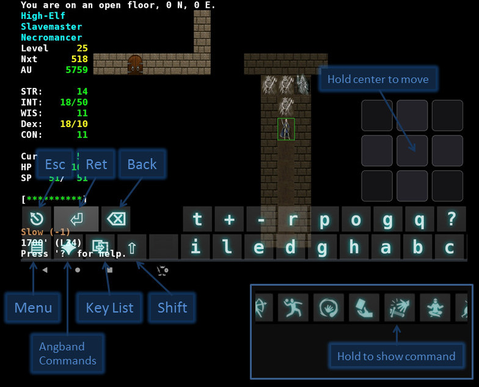
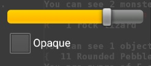
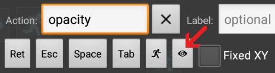
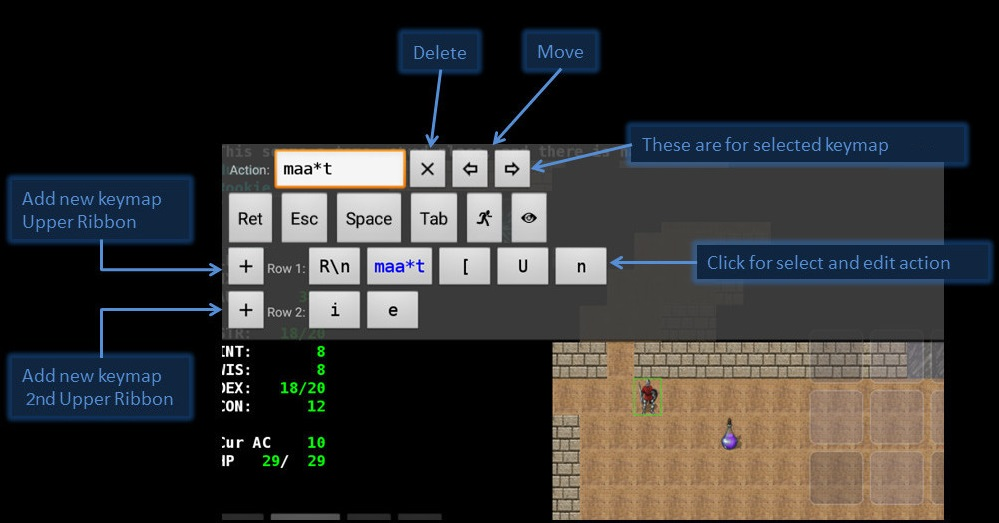
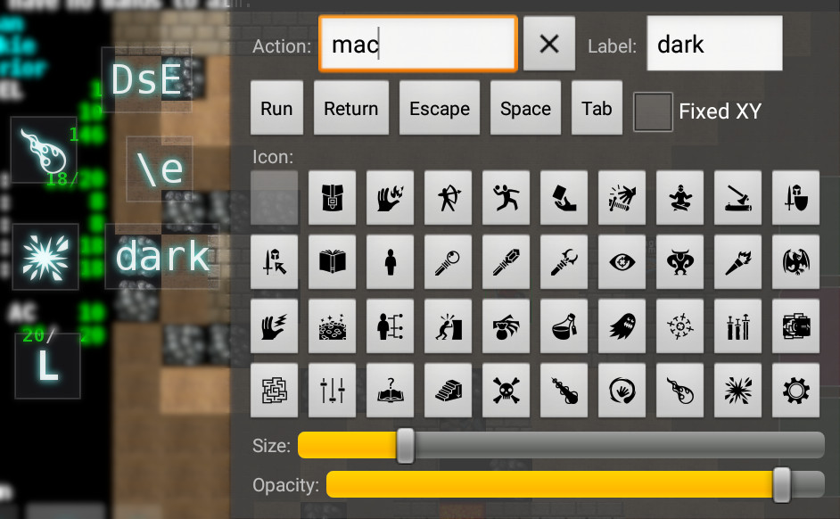
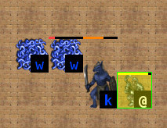

An unofficial port of the roguelike Angband to Android.
Port homepage: https://github.com/Cuboideb/angbandroid
This work is based on the excellent port of Angband found here.
The transparent keyboard was borrowed from here (with modifications).
To customize your game experience, please go to settings and preferences by long-pressing the screen. The port has many options and you have to play a bit with them to find your optimal setup.
Recommended game experience: Landscape Orientation, button ribbon on, center_player option on (it must be set in the variant).
Profiles are designed to play with different characters. Each profile has its own savefile name and more importantly, its own keymaps.
Some variants of Angband are included in the port: FrogComposband, FAangband, Sil-Q and NPPAngband. They are accessed from the Preferences. Using a different profile for each variant/character is adviced.
The game has two input methods: the soft keyboard and the button ribbon. Also, an external keyboard can be plugged to the device.
It has two tabs (alphanumeric and symbols) and some opacity opacity settings to make playing a bit easier on small devices.
You can customize the height and width of the keyboard in the Preferences. A small width triggers the "vertical" display of the keyboard. You can then move the DPad (see below) to the bottom-right corner for a more compact input layout.
Some keyboard shorcuts:
It appears when the soft keyboard is hidden, and it has two modes (command and full).
In command mode, the ribbon contains icons for the most used commands in the game. Some commands perhaps are missing in this mode (zap a rod, aim a wand, etc.), but most of them can be triggered using the Inventory, Alter and Use commands.
It's important to remember that directions can be used to cycle between equipment, inventory, floor and quiver.
To reduce the number of buttons in command mode, the Alter command can also open chests and close doors.
In the preferences section, you can find some useful options for the ribbon, like "Button size multiplier".

Clicking on "Change Opacity" in Quick Settings shows a fast popup to adjust the opacity of the keyboard, ribbon and floating buttons. This functionality can be bound to a keymap too (the eye icon).


While using the button ribbon, the Quick Settings menu gets the item "Manage keymaps". It can be used to quickly define common keymaps shortcuts.

Every variant can load internally a new pref file, android.prf. The content of this file is defined by the user and isn't overwritten by port updates. Its location is the "customize" folder for Angband and FAangband and the "pref" folder for the rest of the variants.
Also created from the Quick Settings menu, they allow you to place keymaps anywhere on the display. A floating buttons has a mandatory action (the sequence of keys that is sent to the core game), an optional label and an optional icon.

The game view can be configured to display 9 squares for moving the character in the dungeon. The action of the center square can be set to do different things.
The DPad can be displayed in compact form to the right of the display. In that case the center square has another use. Long-pressing enables you to drag and drop the whole set to another zone of the screen.
Besides the touch directionals, every touch in the term view is sent to the core game as a mouse press, allowing movement and menu selection.
This port support the usual graphic tilesets of Angband (go to Preferences). Try the "ascii helper" setting. In that mode monsters and player have small ascii letters in the right-bottom corner to easy the transition from ascii to graphics.

The Escape key can be entered by pressing the Back button.
Detailed hardware key mapping can be changed in preferences. When assigning hardware keys, the interface will ask you to press a hardware key. If the key you press was already assigned to another function, be aware that the original function will now be unassigned.
If you configure your menu button for a function other than showing the menu, you will need to use a long screen press to access Preferences and other menu choices. Hardware key mapping can be reset to the default configuration in preferences.
Pressing the home button on the phone will cause the program to go into the background. The game will automatically be saved when this happens, so you don't need to save the game first.
Enjoy!
Angband homepage https://github.com/angband/angband
Forum and resources http://angband.oook.cz
Online manual https://angband.readthedocs.io/en/latest/index.html
Android Port by David Barr, Sergey Belinsky, Dan Vernon
Angband Borg by Dr. Andrew P. White
3.0.6 Squelch by Pete Mack
Thanks to the Angband dev team for creating and maintaing the best game for so many years.
Thanks also to Fredrik Farnstrom (Nethack for Android) for inspiration and shared code.